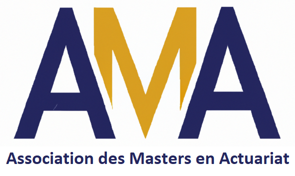

La lecture de certains documents
peut nécessiter le téléchargement d'Acrobat Reader ou de GhostView.
Association des Masters en Actuariat

Le lien vers le site de l'AMA est ici, et la page LinkedIn est ici.
Université Gustave Eiffel
Les documents pédagogiques des cours suivants sont disponibles sur le E-learning de l'université.
Cours passés :
- Modélisation en probabilités : L2 Maths et MIASHS
- Probabilités et Statistique : ESIPE 2A
- Analyse des données et SAS : M1 Actuariat
- Point processes and their applications in Biology : M2 Maths-Info
- Machine learning : M2 Maths-Info
- Maths and algorithms for Biology : M2 Maths-Info
Ecole Polytechnique
Les documents pédagogiques sont disponibles sur le Moodle de l'Ecole Polytechnique.
- Modèles probabilistes et statistiques pour l'épidémiologie : M2 MSV
Archives
les documents relatifs aux cours et TD donné à Lille de 2007 à 2019 sont ici